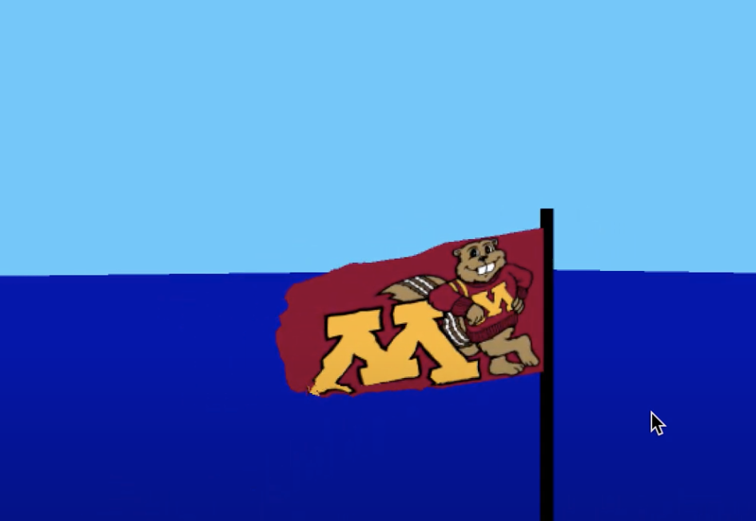
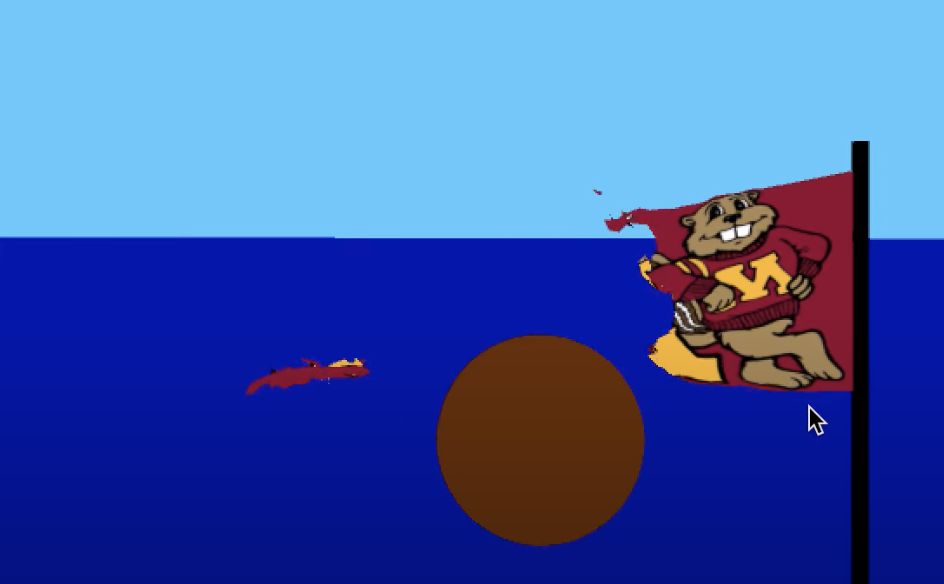

A Minnesota Gopher Cloth flapping in the wind

A piece of cloth flying away in the wind after getting ripped off by a cannon ball :(. I like this image and would like to submit it to the ART CONTEST
List of features attempted and description
Multiple Ropes
An agent uses the A* algorithm on a graph created by placing a user-decided number of nodes to navigate to the goal. I smoothed the look of the agents by navigating to the node that is furthest along the agent's path that is visible
Cloth Simulation
The user starts each simulation by clicking the mouse to place an obstacle.
The user can make the latest obsticle added larger or smaller by pressing the right or left arrow key
Once the user is done adding obsticles, they press the space bar, and can click the mouse anywhere to add agents. If they click on an obsticle the agent will not be added
Once the user is done adding agents, they press the space bar, and can click anywhere to set the goal position for all agents
The user then presses the space bar again to run the simulation and can press r at anytime to restart
3D Simulation
At any time during the simulation, the user can click the mouse and change the goal position. The agents will recalculate the path and navigate to the new goal.
Air drag for cloth
Multiple agents can be added by the user and each will have their own path to the goal
Ripping Tearing
I chose to use boids as my crowd simulation
The agents will not collide with one another
If the agents have no path to the goal, they will continue to move in a boid like fashion
Once all of the agents have arrived at the goal, they don't like to get too close to each other so will go to the outside of the crowd sourounding the goal.
Code
I modified the original Proj1_Test.pde code to run my simulations, modified PRM.pde to run my path finding, and used Vec2.pde and CollisionLibrary.pde to assist with vector math and collision detection, respectively.